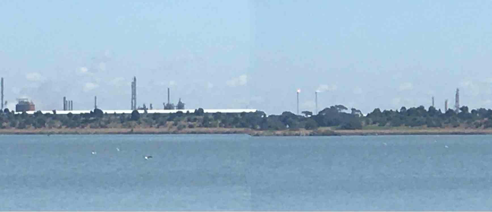
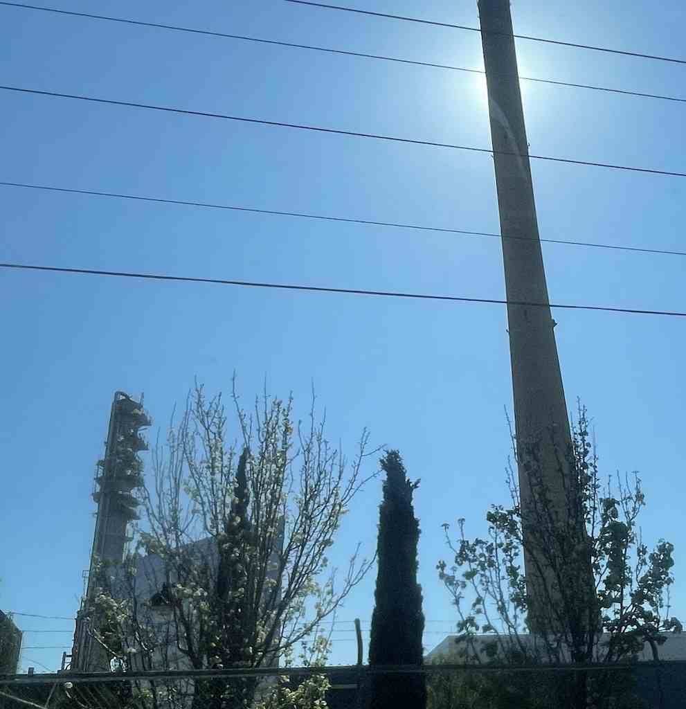
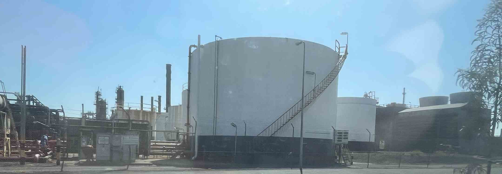

the location of this level might be based more based of the geelong refinery, but most of the visuals is based off one at Altona! And yes the city is called Eulerstan, you got a problem with that man?

